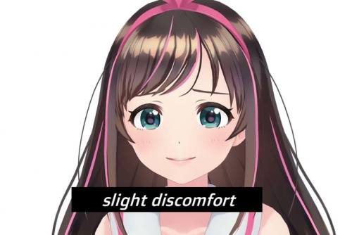

YOUR RESULT :- High depression
Severe or major depression tends to be noticeable to others. The condition is very debilitating, making it extremely difficult to perform usual activities.Benzodiazepines are also available, but they can become addictive with prolonged use. Doctors usually prescribe them when other options have not worked.
Cures:-
1) Meditation and morning Exercises
2) Electroconvulsive therapy
3) Benzodiazepines are also available(taken only for very severe cases)
YOUR RESULT :- Moderate depression
The experience of depression can change over time. New symptoms, such as periods of gloominess or sleeplessness, may occur.
These types of changes may indicate a transition from mild to moderate depression. If a person observes any differences in symptoms, they should consult a doctor.
Cures:-
1) Regular Meditation
2) Playing more outdoor games
3) Balanced Diet
4) Proper morning Exercises
YOUR RESULT :- Mild Depression

Mild depression is often treated with simple lifestyle changes. These may involve altering a person's diet and sleeping patterns, or improving their work-life balance. It may also help to spend designated periods of time away from TV and social media.
Cures:-
1)Regular Medidation
2)Enjoying small successes
YOUR RESULT :- Yeah , No word like depreesion in life
Live life as you living , keep enjoying the life around you.